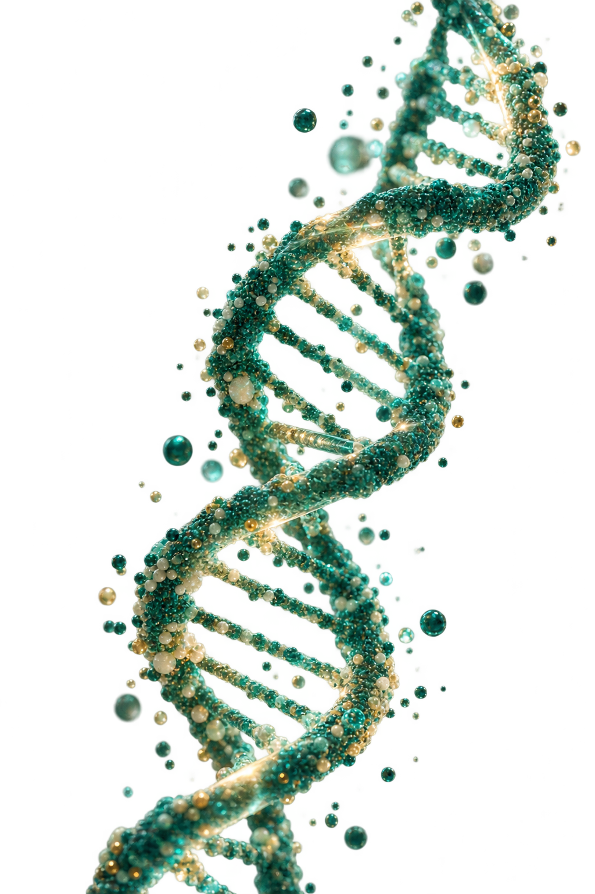
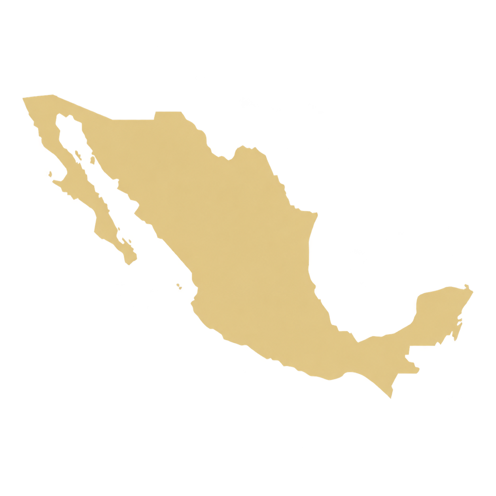

Una perspectiva longitudinal
Los datos de distintas fases permiten observar cambios en las mismas dimensiones de salud a través del tiempo.
 Cohorte de
Cohorte deUna historia de salud que se construye a lo largo del tiempo. Investigación que reúne evaluaciones, muestras biológicas y estilos de vida para comprender cómo cambia la salud de sus participantes.


La Cohorte de Trabajadores de la Salud es un estudio observacional, prospectivo y longitudinal. Sigue la salud de trabajadores del sector y sus familias mediante distintas rondas de evaluación.
Los datos de distintas fases permiten observar cambios en las mismas dimensiones de salud a través del tiempo.
Cuestionarios, evaluaciones físicas, pruebas clínicas, imágenes y muestras biológicas ofrecen distintas perspectivas del estudio.
El análisis conjunto permite estudiar asociaciones entre hábitos, factores biológicos y enfermedades crónicas.
Explora las distintas evaluaciones y la información que aportan al seguimiento de la salud.
Un equipo de distintas instituciones y disciplinas, unido por el seguimiento y la investigación de la salud.
Inicio del estudio en trabajadores del IMSS en Morelos, con información sobre estilos de vida y salud.
Ampliación del estudio a trabajadores y familiares de instituciones de salud y académicas, con cuestionarios, examen físico y muestras de sangre.
Seguimiento de participantes e incorporación de nuevos integrantes. Asistieron 1,855 de 2,500 personas convocadas (74%).
Reevaluación de la cohorte y desarrollo de estudios de microbiota intestinal en subgrupos de participantes, junto con información de alimentación y salud metabólica.
Nueva etapa de seguimiento para actualizar la información de salud de los participantes y dar continuidad al estudio de sus cambios a lo largo del tiempo.
Las muestras biológicas acompañan las evaluaciones y los análisis del estudio.
Las mediciones se repiten para conocer la evolución de la salud.
Los cuestionarios recogen antecedentes, hábitos y factores del entorno.
La información clínica, biológica y de hábitos se integra para la investigación.
La información reunida a lo largo del seguimiento ha dado lugar a publicaciones en distintas áreas de la salud.
Las publicaciones de la Cohorte han analizado cómo se relacionan el consumo de bebidas, los patrones alimentarios, la presión arterial y los indicadores metabólicos.
El seguimiento permite estudiar la relación temporal entre la adiposidad, los estilos de vida y los indicadores de resistencia a la insulina.
Distintos análisis estudian la densidad mineral ósea y su relación con la alimentación, los antioxidantes y los factores genéticos.
La investigación también aborda los síntomas depresivos y su relación con la actividad física, la alimentación y experiencias del entorno personal.
En subgrupos de participantes se han estudiado variantes genéticas, composición de la microbiota y su relación con la salud metabólica.
La información de la Cohorte ha permitido investigar herramientas no invasivas para evaluar el riesgo de fibrosis hepática a partir de mediciones clínicas y bioquímicas.
Cada investigación utiliza las fases y los participantes que corresponden a su pregunta de estudio. Los hallazgos describen asociaciones en los grupos analizados.
El seguimiento de las mismas personas permite estudiar cómo se relacionan los hábitos, los factores biológicos y las enfermedades crónicas a lo largo del tiempo.
Las evaluaciones de cada fase aportan nuevas mediciones para el análisis longitudinal.
Cuestionarios, mediciones clínicas y muestras biológicas complementan el estudio de la salud.
El equipo de investigación analiza asociaciones entre estilos de vida y distintas dimensiones de salud.
Los dominios fenotípicos y multiómicos ofrecen distintas perspectivas de la salud a través de las fases.
Cuestionarios, evaluación clínica, marcadores sanguíneos y composición corporal.
Genómica, metabolómica, proteómica y metilación, con disponibilidad distinta según fase y dominio.
Pruebas funcionales, estudios de imagen y microbioma amplían las dimensiones de investigación.
La disponibilidad de cada dominio varía por fase: puede corresponder a una evaluación principal, una submuestra o un análisis en curso.
Observa y analiza la información de sus participantes a través del tiempo, sin asignar tratamientos como parte de un ensayo clínico.
Cuestionarios de hábitos y antecedentes, mediciones físicas, pruebas clínicas, estudios de imagen y muestras biológicas, según el protocolo de cada fase.
Este sitio presenta el proyecto de investigación y su colaboración institucional. No ofrece inscripción pública ni recopila datos personales.
La cohorte vincula a participantes, personal de investigación e instituciones colaboradoras en un seguimiento a largo plazo.
Conoce las instituciones ↗